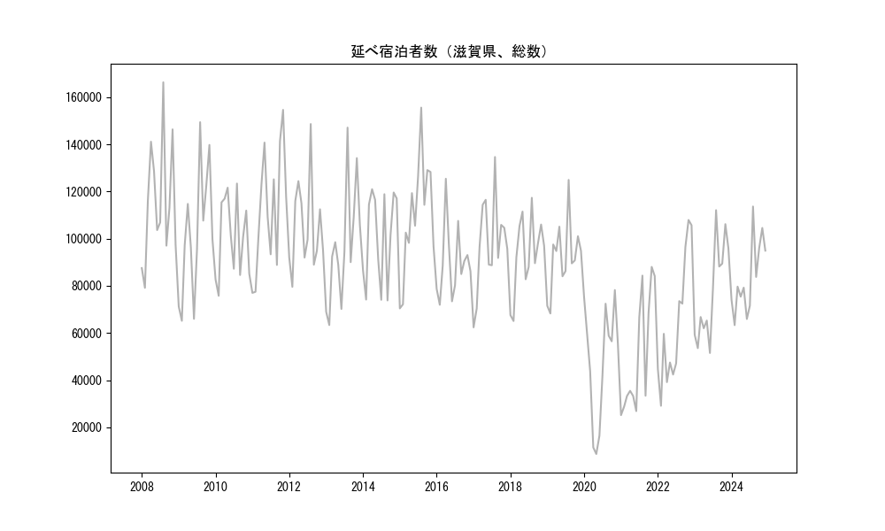

-
トップ
-
滋賀県
滋賀県
１．延べ宿泊者（総数）の推移
時系列グラフ

図１：滋賀県内の従業員数100人以上の宿泊施設での延べ宿泊者数（国外、居住地不詳を含む総数）。
基本統計量
表１：従業員数100人以上の宿泊施設での延べ宿泊者の総数（国外、および居住地不詳を含む）に関する基本統計量。単位は人泊。平均は１か月あたりの平均値を表す。図１に対応。
| 2008年 |
115,247 |
25,859 |
79,139 (2月) |
166,274 (8月) |
| 2009年 |
102,089 |
26,935 |
65,151 (2月) |
149,370 (8月) |
| 2010年 |
100,542 |
17,023 |
75,765 (2月) |
123,356 (8月) |
| 2011年 |
112,395 |
25,719 |
76,988 (1月) |
154,599 (11月) |
| 2012年 |
104,866 |
19,135 |
79,553 (2月) |
148,585 (8月) |
| 2013年 |
96,919 |
25,034 |
63,357 (2月) |
147,068 (8月) |
| 2014年 |
100,717 |
19,614 |
73,792 (9月) |
120,961 (4月) |
| 2015年 |
109,870 |
24,378 |
70,426 (1月) |
155,541 (8月) |
| 2016年 |
89,827 |
15,048 |
71,939 (2月) |
125,386 (4月) |
| 2017年 |
97,512 |
19,765 |
62,369 (1月) |
134,611 (8月) |
| 2018年 |
93,342 |
16,127 |
65,063 (2月) |
117,311 (8月) |
| 2019年 |
92,366 |
14,974 |
68,257 (2月) |
124,904 (8月) |
| 2020年 |
48,162 |
24,387 |
8,682 (5月) |
78,200 (11月) |
| 2021年 |
50,664 |
25,325 |
25,147 (1月) |
88,025 (11月) |
| 2022年 |
63,808 |
27,184 |
29,123 (2月) |
107,911 (11月) |
| 2023年 |
77,412 |
20,668 |
51,509 (6月) |
112,074 (8月) |
２．宿泊者数の重心（年平均の推移）
図２：滋賀県内の従業員数100人以上の宿泊施設での延べ宿泊者数（国外、居住地不詳を除く）の重心（年平均の推移）。
全画面表示
重心の前年平均からの移動距離と方位、および緯度・経度
表２：重心の前年平均からの移動距離と方位、および緯度・経度。図２に対応。
| 2008年 |
— |
— |
35.1146 |
136.4608 |
| 2009年 |
東 |
6.5km |
35.1142 |
136.5324 |
| 2010年 |
東北東 |
11.1km |
35.1594 |
136.6413 |
| 2011年 |
西 |
8.6km |
35.1710 |
136.5484 |
| 2012年 |
南南西 |
4.2km |
35.1384 |
136.5244 |
| 2013年 |
西 |
8.1km |
35.1469 |
136.4360 |
| 2014年 |
南東 |
3.5km |
35.1262 |
136.4657 |
| 2015年 |
北東 |
8.3km |
35.1685 |
136.5410 |
| 2016年 |
北北東 |
2.4km |
35.1877 |
136.5519 |
| 2017年 |
南 |
3.9km |
35.1529 |
136.5468 |
| 2018年 |
北東 |
9.7km |
35.2100 |
136.6274 |
| 2019年 |
西南西 |
3.3km |
35.1946 |
136.5966 |
| 2020年 |
西 |
9.0km |
35.1967 |
136.4975 |
| 2021年 |
南西 |
17.5km |
35.1061 |
136.3403 |
| 2022年 |
東北東 |
5.9km |
35.1229 |
136.4019 |
| 2023年 |
東北東 |
11.5km |
35.1639 |
136.5182 |
運輸局別延べ宿泊者数
時系列（年平均）
図３：滋賀県内の従業員数100人以上の宿泊施設での１か月あたり平均延べ宿泊者数（国外、居住地不詳を除く）の運輸局別内訳。
寄与度（前年からの変化率に対する）
 図４：滋賀県内の従業員数100人以上の宿泊施設での運輸局別延べ宿泊者数（国外、居住地不詳を除く）から求めた寄与度。
図４：滋賀県内の従業員数100人以上の宿泊施設での運輸局別延べ宿泊者数（国外、居住地不詳を除く）から求めた寄与度。
３．宿泊者数の重心（月別）
図５：滋賀県内の従業員数100人以上の宿泊施設での延べ宿泊者数（国外、居住地不詳を除く）の重心（月別）。観測期間は2008年1月から2023年12月まで。
全画面表示
全期間（2008年1月～2023年12月）の平均と月別平均の比較
表３：全期間の平均から月別平均までの移動距離と方位、および緯度・経度。図５に対応。
| 全期間 |
— |
— |
35.1546 |
136.5144 |
| 1月 |
西南西 |
27.9km |
35.0293 |
136.2491 |
| 2月 |
西南西 |
34.6km |
35.0189 |
136.1723 |
| 3月 |
北北西 |
4.1km |
35.1861 |
136.4918 |
| 4月 |
西北西 |
3.7km |
35.1634 |
136.4755 |
| 5月 |
東南東 |
13.6km |
35.1305 |
136.6605 |
| 6月 |
南南東 |
3.5km |
35.1286 |
136.5353 |
| 7月 |
東北東 |
1.5km |
35.1609 |
136.5292 |
| 8月 |
南西 |
16.2km |
35.0513 |
136.3892 |
| 9月 |
東北東 |
10.5km |
35.1892 |
136.6215 |
| 10月 |
北東 |
16.8km |
35.2664 |
136.6387 |
| 11月 |
東北東 |
37.6km |
35.3265 |
136.8706 |
| 12月 |
北北東 |
6.0km |
35.2044 |
136.5392 |
運輸局別延べ宿泊者数
月別平均（2008年1月～2023年12月）
 図６：滋賀県内の従業員数100人以上の宿泊施設での延べ宿泊者数（国外、居住地不詳を除く）の運輸局別内訳（月別）。
図６：滋賀県内の従業員数100人以上の宿泊施設での延べ宿泊者数（国外、居住地不詳を除く）の運輸局別内訳（月別）。
寄与度（全期間の平均から月別平均への変化率に対する）
図７：滋賀県内の従業員数100人以上の宿泊施設での運輸局別延べ宿泊者数（国外、居住地不詳を除く）から求めた寄与度（月別）。
４．データのダウンロード
出典：観光庁「宿泊旅行統計調査」に収録された「施設所在地、居住地別延べ宿泊者数（従業員数100人以上の施設）」
国土地理院「白地図（地理院タイル）」（図２と図５）